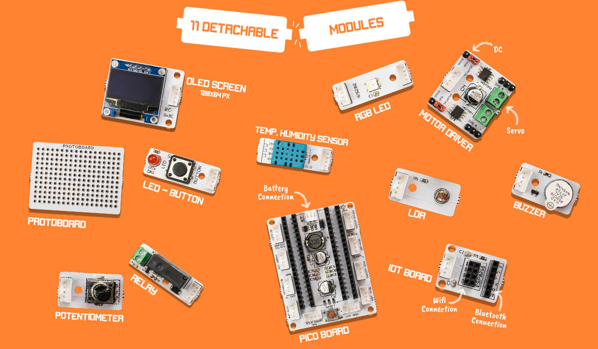

Bricks¶
 |
Pico Board¶
Raspberry Pi Pico is a microcontroller that you can use in your embedded system projects, prototyping. Raspberry Pi Pico, powered by the RP2040 microcontroller, has a dual-core ARM Cortex M0+ processor. The low-cost Raspberry Pi Pico stands out with its low power consumption and high performance. The Raspberry Pi Pico, which can be programmed with both C/C++ and MicroPython, appeals to users of all ages.
OLED Screen¶
Miniature OLED display modules are a great way to add a small screen to your Raspberry Pi projects.
Temperature and Humidity Sensor¶
It uses a capacitive humidity sensor and a thermistor to measure the surrounding air and spits out a digital signal on the data pin. It’s fairly simple to use but requires careful timing to grab data.
RGB LED¶
RGB LED modules can emit various colors of light. The three primary colors, red, green, and blue, can be mixed and compose all kinds of colors by brightness, so you can make an RGB LED emit colorful light by controlling the circuit.
Motor Driver¶
It is electrical equipment that adjusts the speed of induction motors by changing the frequency. In addition to speed control, it is equipped with superior protection, control and communication features.
LDR¶
LDR sensor module is used to detect the intensity of light. When there is light, the resistance of LDR will become low according to the intensity of light. The greater the intensity of light, the lower the resistance of LDR. The sensor has a potentiometer knob that can be adjusted to change the sensitivity of LDR towards light.
Relay¶
Relays are switches that open and close circuits electromechanically or electronically. Relays control one electrical circuit by opening and closing contacts in another circuit.
Potentiometer¶
A potentiometer is defined as a 3 terminal variable resistor in which the resistance is manually varied to control the flow of electric current.
ESP8266¶
ESP8266 is a low Wi-Fi microcontroller with full TCP/IP stack. It has many GPIO (general purpose input output pins) for interfacing with different sensors. ESP8266 due to its good functionality is used a lot in prototyping IOT products.
Its cross functionality with Arduino makes it easy to program with Arduino IDE.
Buzzer¶
A buzzer or beeper is an signaling device, which produces sound.
Protoboard¶
A protoboard is usually a construction base for prototyping of electronics.